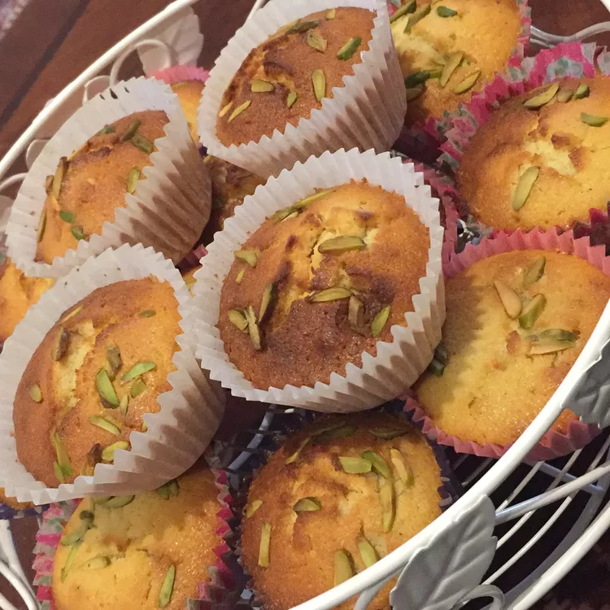

Yazdi Cakes

Description
Yazdi cakes are very popular in Iran and are usually served with tea. This recipe will yield us 24 cakes.
Ingredients
- 2 cups all-purpose flour
- 1 teaspoon baking powder
- 4 eggs
- 1 ¼ cups white sugar
- 1 cup plain yogurt
- 1 ½ teaspoons ground cardamom
- 1 tablespoon rose water
- ½ cup blanched slivered almonds
- 1 ½ tablespoons chopped pistachio nuts
Steps
- Preheat the oven to 350 degrees F (175 degrees C). Grease the cups of a muffin pan. You will need 24 cups.
- Sift flour and baking powder into a bowl; set aside.
- Combine the eggs and sugar in a large heatproof bowl and set on top of a pan of simmering water. Beat constantly with a whisk or electric mixer until thick and pale, about 8 minutes. Remove from the heat and continue to beat until cooled, about 10 minutes. Mix in the butter, yogurt, cardamom and rose water. Stir in the flour mixture by hand and fold in the slivered almonds. Spoon into the prepared cupcake molds, filling 3/4 full. Sprinkle some chopped pistachios over the tops.
- Bake in the preheated oven until firm to the touch and golden brown, 25 to 30 minutes.